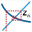

MathGraph32 is able to graph recurrent sequences type of u(n+1) = f[u(n)], where f represents a real or complex function.
Real recurrent sequence graph.
It is the type of graph often called web-graph.
Before creating the graph you must create the real recurrent sequence with tool in the calculations expandable bar.
.
The graph is the created via icon  in the graph expandable bar
in the graph expandable bar
A dialog box pops up.
You select :
Complex recurrent sequence graph.
Before creating the graph you must create the complex recurrent sequence with tool  in the calculations expandable bar.
in the calculations expandable bar.
Each complex term of the sequence is represented through a point affix of which is the term. This point is drawn in the active point style.
Each point is linked to the next one through a segment drawn in the active color and line style.
The graph is created via icon

in the graph expandable bar.A dialog box pops up for the choice of the sequence and frame.